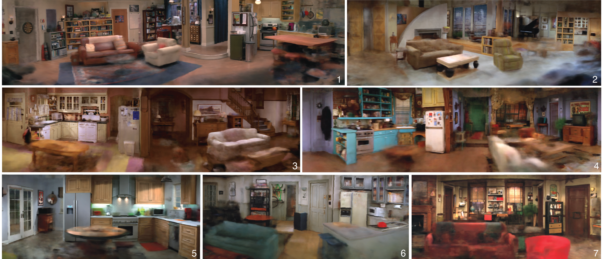
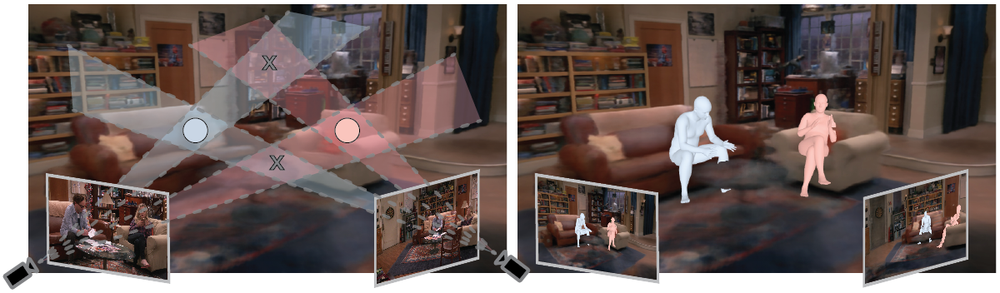

The One Where They Reconstructed
3D Humans and Environments in TV Shows
ECCV 2022
- UC Berkeley
- * denotes equal contribution
Abstract
TV shows depict a wide variety of human behaviors and have been studied extensively for their potential to be a rich source of data for many applications. However, the majority of the existing work focuses on 2D recognition tasks. In this paper, we make the observation that there is a certain persistence in the data, i.e., repetition of the environments and the humans, which makes possible the 3D reconstruction of this content. Building on this insight, we propose an automatic approach that operates on an entire season of a TV show and aggregates information in 3D; we build a 3D model of the environment, compute camera information, static 3D scene structure and body scale information. Then, we demonstrate how this information acts as rich 3D context that can guide and improve the recovery of 3D human pose and position in these environments. Moreover, we show that reasoning about humans and their environment in 3D enables a broad range of downstream applications: re-identification, gaze estimation, cinematography and image editing. We apply our approach on environments from seven iconic TV shows and perform an extensive evaluation of the proposed system.
Recovered cameras and sparse structure
These cameras, images, and the point cloud are from the living room of "The Big Bang Theory".
Rooms from seven iconic sitcoms!
We consider seven rooms from seven sitcoms.
Panoramic NeRF views of the reconstructed TV environments. The sitcoms are as follows: 1. "The Big Bang Theory", 2. "Frasier", 3. "Everybody Loves Raymond", 4. "Friends", 5. "Two and a Half Men", 6. "Seinfeld", 7. "How I Met Your Mother".
NeRF renderings of the rooms. The NeRF renderings with camera movement in the rooms.
Recovering humans with calibrated cameras
Using calibrated cameras to solve for scale and identity association. Given calibrated cameras, we use frames at shot changes to solve for the actor's pose, location, relative scale, and association. The four overlapping regions (left) indicate possible locations triangulated by the cameras. Circles indicate correct matches after Hungarian matching. Reconstructed humans are visualized in a NeRF (right).
Our "calibrated multi-shot" method. Here is a depiction of our method in action. Notice the two shot changes that are used.
Temporal reconstruction
We can reconstruct video sequences from TV shows where we replace the background with the NeRF rendering and the people with SMPL meshes. We leverage our recovered 3D context (body pose, shape, location, and identity) and HuMoR for this result.
Temporal reconstruction with novel views!
We can move the camera around the room to replay a video sequence from a new viewpoint. This could enable a new form of post-production video editing.